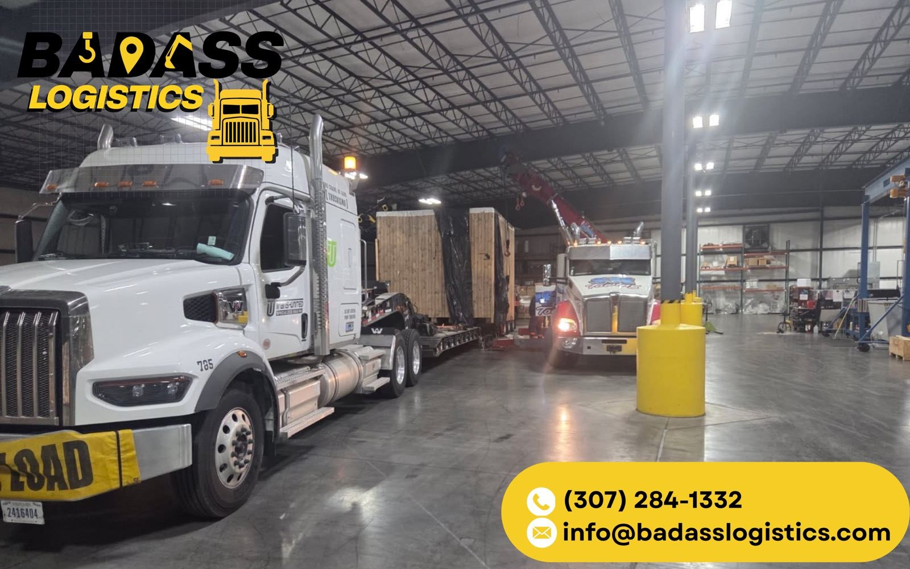

Match the trailer to the machine's real weight and dimensions. Small dozers can travel inside the legal envelope, mid-size machines go overwidth the moment the blade is on, and anything D7-class and up is a permitted overweight load on a multi-axle RGN. Pull the blade and ripper when width or weight triggers escorts, chain to designated frame points per federal securement rules, and permit every state on the route before the tracks touch the deck.
Nobody ships "a bulldozer." You ship a compact dozer under 20,000 pounds or you ship a 230,000-pound D11, and the two jobs have almost nothing in common except the tracks. The machine's operating weight and transport dimensions decide the trailer, the axle count, the permits, and how much of the machine comes off before it rolls. Get those numbers wrong and everything downstream is wrong too.
Know your size class first
Small dozers — the D1-to-D3 class and their Deere and Komatsu equivalents — run under roughly 20,000 pounds and, with the blade angled or pulled, can often travel inside the legal envelope: 8'6" wide, 13'6" tall, under 80,000 pounds gross combined. Mid-size machines in the D4–D6 range land roughly between 20,000 and 50,000 pounds, and their blades commonly measure 10 to 13 feet — overwidth the moment they leave the yard. Large dozers, D7 through D9, run from the mid-50,000s to north of 100,000 pounds and are permitted loads every single time. At the top end, a D10 or D11 is a teardown project: a D11 runs in the neighborhood of 230,000 pounds with a universal blade over 20 feet wide, so it moves as multiple loads — hull, blade, ripper, sometimes cab and canopy — with the main hull often riding as a superload.
Why the RGN is the default answer
For anything that moves under its own power, a removable gooseneck trailer is the go-to, and it isn't close. Detach the neck and the front of the deck drops to the ground — the dozer walks on under its own tracks. No crane, no ramps at a bad angle. Just as important is deck height: an RGN well sits around 18 to 24 inches off the pavement, which leaves roughly 11 feet of machine height under the 13'6" ceiling. Put the same machine on a standard flatbed and you have burned five feet of that budget before the tracks touch wood. A fixed-neck lowboy gets you the same low well but loads over the rear or by crane. The full comparison is in our RGN vs Lowboy Trailers guide.

Weight: where legal ends
Here is the math that surprises people. The 80,000-pound federal gross limit includes the truck and the trailer. A tractor hooked to a tri-axle RGN claims roughly half of that before the dozer ever touches the deck, which leaves a legal payload somewhere in the low-to-mid 40,000s. That covers the small class and some mid-size machines — everything else is an overweight permit. Above that, weight gets managed with axles: 3+1 flip-axle setups, four-axle trailers, then jeep-and-booster configurations that stretch the wheelbase and spread the load so each axle group stays inside state limits. A D8 or D9 hull commonly rides a multi-axle RGN with a jeep up front and a booster behind. A D11 hull is engineered-move territory — bridge analysis, specified routing, the works.
Cutting width: blade and ripper
The blade is almost always the widest part of the machine, and width is what triggers escorts. Many states draw the pilot-car line at 12 feet, and curfews stack up from there. On a lot of mid-size dozers, pulling the blade — or angling it where the mounting allows — drops the load below a threshold and simplifies the whole move. The blade rides flat on the same deck or follows on a flatbed. Same logic on the back end: pulling the ripper shortens overall length and sheds real weight. The tradeoff is shop time on both ends, so the call comes down to which permits, escorts, and restrictions the extra dimensions would have triggered along the specific route.
Securement: chains and attachment discipline
Federal securement rules (49 CFR 393.130) treat tracked equipment over 10,000 pounds as its own category: a minimum of four independent tie-downs at the machine's designated securement points, with the aggregate working load limit at no less than half the cargo weight. In practice that means grade-70 or better chain run direct to frame points — never over the tracks, never around hydraulic lines. Anything that articulates gets lowered to the deck and secured separately: blade down, ripper down, each with its own chain. Brake set, and the whole system gets rechecked within the first 50 miles.
Route and permit planning
Oversize and overweight permits are issued state by state, and every state on the route has its own dimension thresholds, escort triggers, travel curfews, and turnaround times — routine permits in days, superload reviews with bridge engineering in weeks. Height is the silent killer: a load over 13'6" doesn't just need a permit, it needs a verified route with every low bridge and utility line accounted for. It is the same discipline we run when shipping an excavator, and the state-by-state detail lives in our Oversize Load Permits Guide. If your machine needs all of the above, that is Heavy Haul Transport — send the model, serial number, and attachments list and get a quote.
Bottom line
- Weigh and measure the actual machine, attachments installed, before anyone picks a trailer.
- RGN is the default: ground-level drive-on loading and a low well that keeps tall machines under 13'6".
- Assume anything D6-class and up is overweight — axle count and configuration are how the load stays legal per axle.
- Pulling the blade and ripper is often the simplest width and weight reduction on the table.
- Four chains minimum to frame points, attachments lowered and chained separately, recheck at 50 miles.
- Permits are per-state — plan the entire route before the machine leaves the pad.